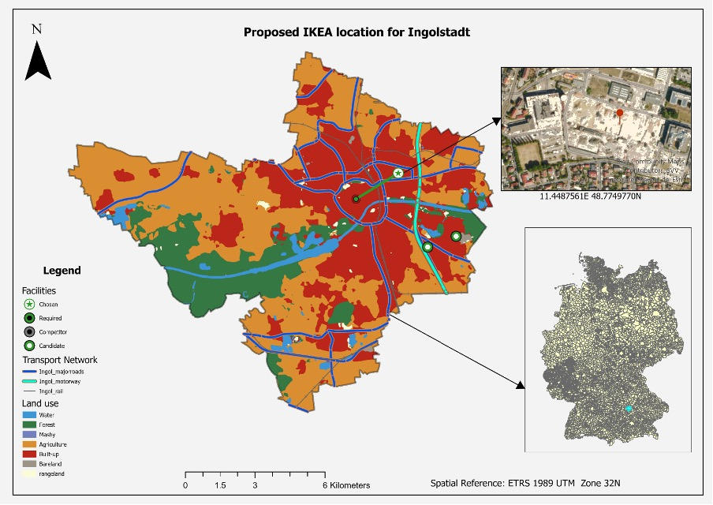
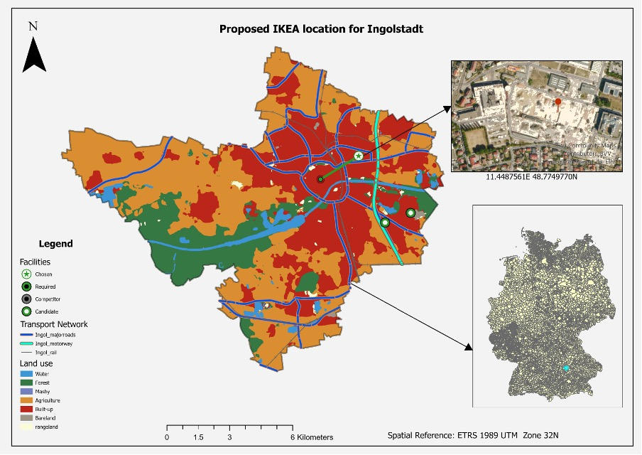

Retail Geomarketing: IKEA Site Selection in Germany
This project used GIS and spatial analytics to identify optimal locations for new IKEA stores in Germany, combining purchasing power, population, transport networks, and competitor analysis.
Site Suitability Criteria
- Minimum space requirement: 20,000–25,000 m²
- City population over 100,000
- Access to major roads, motorways, and rail
- Low competition (e.g., distance from XXXLutz, Roller)
- High purchasing power
Data & Methodology
I used a mix of vector and raster datasets from Esri Living Atlas, Deutsche Bahn, and DIVA-GIS. Key processes included:
- Buffering existing IKEA stores (50km) to identify underserved zones
- Euclidean distance and raster reclassification to prioritize key factors
- Network analysis with a 700m buffer of roads/rails to pinpoint optimal plots
- Location-allocation tool to select final sites


Selected Locations: Trier & Ingolstadt
Both cities met all core criteria and offer strategic value:
- Trier: 110,674 population, high purchasing power, optimal location near rail and road networks.The Proposed Location for Trier (328463.22E 5513062.64N)
- Ingolstadt: 136,952 population, automotive hub, high employment and economic strength (Audi AG).Proposed Location for Ingolstadt (11.4487561E 48.7749770N).
 

Reflections & Insights
- Spatial analytics provided clear, data-backed recommendations
- Reclassification thresholds helped filter for optimal land and access
- GIS tools like location-allocation modeled real-world retail needs
This project demonstrates how geospatial methods can shape retail expansion strategies. I am open to feedback or collaboration on refining location analysis models.